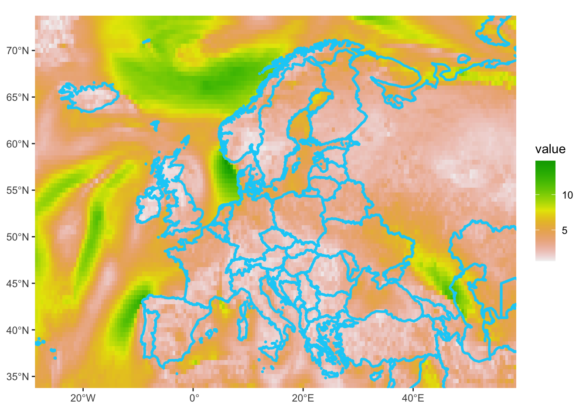
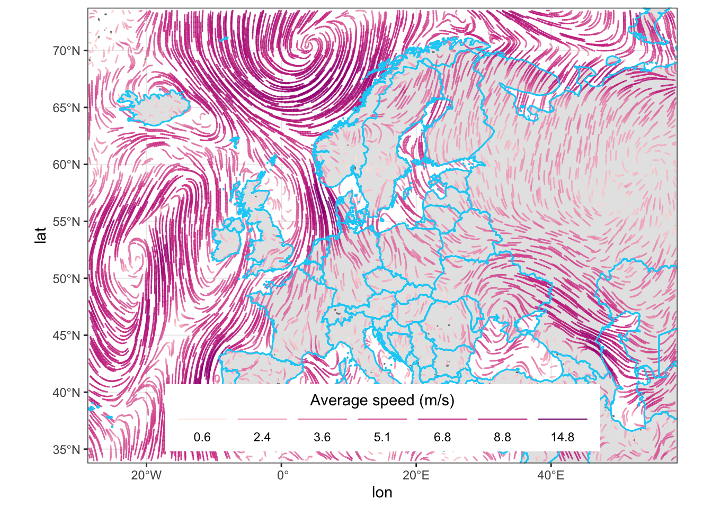

# libraries we need
libs <- c(
"tidyverse", "sf", "giscoR",
"lubridate", "classInt",
"rWind", "metR", "oce", "tidyterra"
)
# install missing libraries
installed_libs <- libs %in% rownames(installed.packages())
if (any(installed_libs == F)) {
install.packages(libs[!installed_libs])
}
# load libraries
invisible(lapply(libs, library, character.only = T))Day 2 Lines
Re-create this image
https://milospopovic.net/mapping-wind-data-in-r/ using his code. I made some changes to the code but it is largely adapted and copied from Milos Popovic 2022/08/28.
This uses the {metR} package function geom_streamline() to plot the lines. Nice blog on using this for wind and current plot here: Plotting streamlines by Masumbuko Semba.
Set up
Install packages.
Specifications for date and location.
year <- 2022
month <- c(start = 8, end = 8)
day <- c(start = 27, end = 28)
by <- "1 hours"
latlon <- c(xmin = -28.5, xmax = 58.5, ymin = 34.0, ymax = 73.5)Get wind function
get_wind_data <- function(time_range, mean_wind_data, eur_wind_df) {
time_range <- seq(lubridate::ymd_hms(paste(year, month[1], day[1], 00, 00, 00, sep = "-")),
lubridate::ymd_hms(paste(year, month[2], day[2], 00, 00, 00, sep = "-")),
by = by
)
mean_wind_data <- rWind::wind.dl_2(time_range, latlon[1], latlon[2], latlon[3], latlon[4]) %>%
rWind::wind.mean()
df <- as.data.frame(mean_wind_data)
return(df)
}Get wind data and make into a raster for plotting later.
crs_string <- "+proj=longlat +datum=WGS84 +no_defs"
filePath <- here::here("content", "data", paste0("wind-", year, "-", month[1], "-", day[1], ".RData"))
if (!file.exists(filePath)) {
df <- get_wind_data()
save(df, file = filePath)
} else {
load(filePath)
}
colnames(df) <- c("time", "lat", "lon", "u", "v", "dir", "vel")
df2 <- data.frame(x = df$lon, y = df$lat, z = df$vel)
ras <- raster::rasterFromXYZ(df2, crs = crs_string)
bb <- st_bbox(ras)
library(terra)
r <- terra::rast(ras)
names(r) <- "vel"
setMinMax(r)Get the land polygons.
region <- c("Europe", "Asia")
land_sf <- giscoR::gisco_get_countries(
year = "2016", epsg = "4326",
resolution = "10", region = region
)Test plot of the raster of wind speed.
autoplot(r) +
geom_sf(
data = land_sf,
fill = NA,
color = "#07CFF7",
linewidth = 1,
alpha = .99
) +
coord_sf(
crs = crs_string,
xlim = c(bb["xmin"], bb["xmax"]),
ylim = c(bb["ymin"], bb["ymax"]),
expand = FALSE
)
Set up colors for lines and the legend.
# colors
cols <- c(
"#feebe2", "#d84594", "#bc2b8a", "#7a0177"
)
newcol <- colorRampPalette(cols)
ncols <- 6
cols2 <- newcol(ncols)
# breaks
vmin <- min(df$vel, na.rm = T)
vmax <- max(df$vel, na.rm = T)
brk <- classInt::classIntervals(df$vel,
n = 6,
style = "fisher"
)$brks %>%
head(-1) %>%
tail(-1) %>%
append(vmax)Warning in classInt::classIntervals(df$vel, n = 6, style = "fisher"): N is
large, and some styles will run very slowly; sampling imposedbreaks <- c(vmin, brk)Make the plot. the after_stat() bit is to delay the calculation of the color until after geom_streamline() does some grouping, I think. Anyhow just using color = sqrt(vel) doesn’t work. I am not sure where the size warning is coming from since I don’t use it in any aes(). Maybe from geom_streamline()?
p <- df %>%
ggplot() +
geom_sf(
data = land_sf,
fill = "grey90",
color = "#07CFF7",
linewidth = .5,
alpha = .99
) +
metR::geom_streamline(
data = df,
aes(
x = lon, y = lat, dx = u, dy = v,
color = sqrt(after_stat(dx)^2 + after_stat(dy)^2)
),
L = 2, res = 2, n = 60,
arrow = NULL, lineend = "round",
alpha = .85
) +
geom_sf(
data = land_sf,
fill = NA,
color = "#07CFF7",
linewidth = .5,
alpha = .5
) +
coord_sf(
crs = crs_string,
xlim = c(bb["xmin"], bb["xmax"]),
ylim = c(bb["ymin"], bb["ymax"]),
expand = FALSE
) +
scale_color_gradientn(
name = "Average speed (m/s)",
colours = cols2,
breaks = breaks,
labels = round(breaks, 1),
limits = c(vmin, vmax)
) +
guides(
fill = "none",
color = guide_legend(
direction = "horizontal",
keyheight = unit(2.5, units = "mm"),
keywidth = unit(15, units = "mm"),
title.position = "top",
title.hjust = .5,
label.hjust = .5,
nrow = 1,
byrow = T,
reverse = F,
label.position = "bottom"
)
) +
theme_bw() +
theme(legend.position = c(.5, .1))
pWarning: Using the `size` aesthetic in this geom was deprecated in ggplot2 3.4.0.
ℹ Please use `linewidth` in the `default_aes` field and elsewhere instead.
axissize <- 30
p2 <- p +
theme(
axis.text.x = element_text(size = axissize),
axis.text.y = element_text(size = axissize),
axis.title.x = element_text(size = axissize),
axis.title.y = element_text(size = axissize),
legend.text = element_text(size = 60, color = "black"),
legend.title = element_text(size = 80, color = "black"),
legend.key = element_blank(),
legend.spacing.y = unit(.5, "pt"),
)
ggsave(
filename = "eur_wind.png",
width = 8.5, height = 7, dpi = 300, p2
)